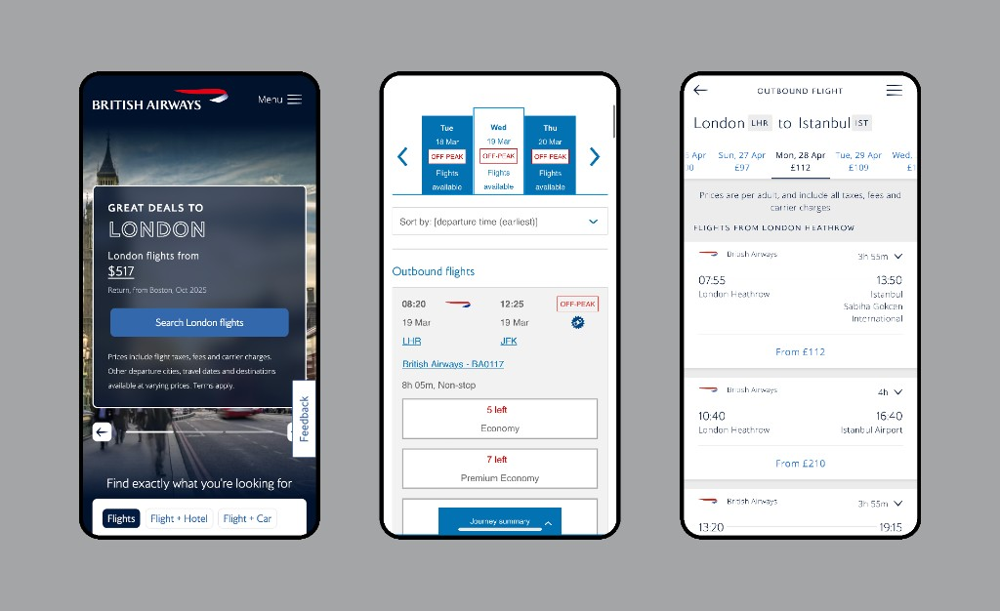
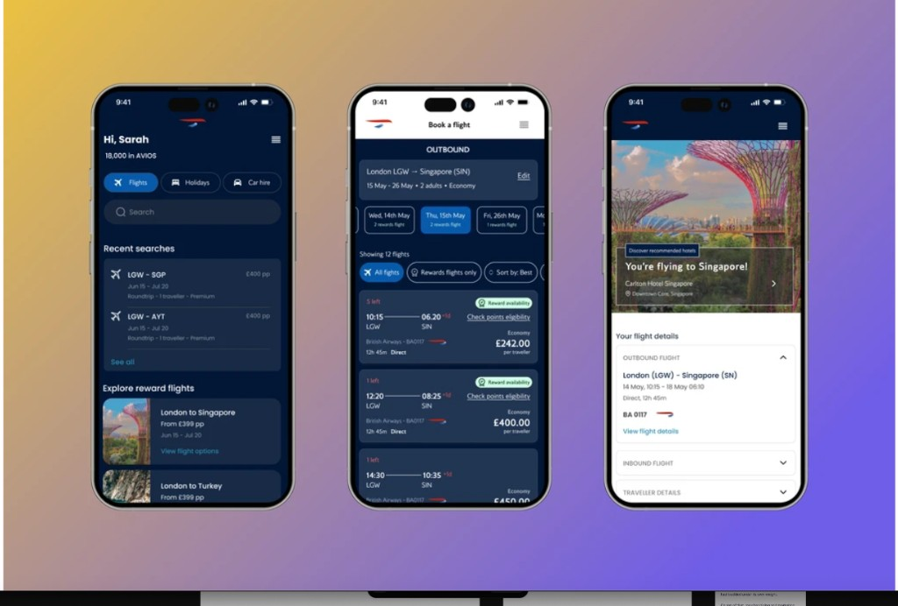

British Airways & Financial Ombudsman Service
designing for AI.
I led the UX strategy and design on two pitch projects exploring the potential of AI in enhancing complex user journeys. One in travel and the other in public sector.
As Lead Product Designer, I shaped the vision for two AI-powered pitch projects, reimagining how travellers book with British Airways, and how caseworkers at the Financial Ombudsman Service handle complex disputes.
Outcomes from the pitch work
Supporting better case judgements through Gen AI
The Financial Ombudsman Service is a free dispute resolution service that settles complaints between consumers and businesses that provide financial services.
They were seeking a supplier to build a Generative AI driven case summarisation solution that helps caseworkers get to the heart of a case much quicker, freeing up their time and resulting in quicker, more informed, and more consistent outcomes.
My role was to work with the engineering team and Product Manager to understand the capabilities of the Gen AI tools and visualise the future case summarisation tool for the pitch.

Lo-fidelity designs for Case Summarisation tool overview page
Crafting AI interactions that build trust and support decisions
Because the tool was being used to support serious financial decisions, I needed to design with care and foresight.
My approach focused on:
-
Building trust: making AI outputs transparent and explainable
-
Balancing automation with judgment: surfacing biases, gaps, and ensuring space for human oversight
-
Supporting decision-making: providing clear next steps and contextual guidance
-
Closing the feedback loop: enabling users to refine and correct AI outputs
-
Reducing cognitive load: offering smart prompts and guided interactions
-
Adapting to context: flexible views (concise vs. detailed) to match user needs
Intelligent Case Search

Historic search: hierarchy, trust band, grounding.
Live summary workspace

Live summary: split columns, uncertainty, depth controls, feedback.
Balancing automation with transparency
I designed the tool to be more than a summariser, a partner for caseworkers. It instantly generates clear summaries, updates them in real time, and lets users edit content to improve accuracy. Intelligent search across case files and transparent source references help users explore and dig deeper.
In this way, the tool not only built trust but also gave users confidence to question, explore, and make better-informed decisions.
Mobile booking: a calmer baseline, then an Intent fit layer.
Airlines live in a crowded surface: hooks, date math, fare tables, and upsells all fight for attention. For a BA travel pitch I worked in two passes. First, a baseline refresh with the same jobs (find flights, compare, commit), clearer scaffolding. Second, an Intent fit concept: infer who is travelling, confirm intent, then rank and explain options while keeping the full catalog one tap away.
This is exploratory work, not commissioned product. I’m presenting it as a case study because the arc matters: anchor on familiar booking patterns, then ask where assistance helps without stripping control.
Before: busier campaign-led layouts. After: calmer navy shell, same tasks (search, compare, review).

Classic web-mobile density: hero deal, sort, off-peak labels, class buttons, familiar but busy.

Navy shell, pills, rewards cues, and a clearer review step, still a standard catalog, not assisted ranking.
Intent fit: where assistance is allowed to show up
With the baseline readable, I asked a narrower question: when the party mix implies a kind of trip (family, business, leisure), could the product reduce sorting work without hiding the full list? The hypothesis was that ranking and copy could help if the UI stayed inspectable (short rationale, collapsible signals) and reversible (explicit trip-type confirmation, manual override, All beside Recommended).
I prototyped that as Intent fit: infer intent from who is travelling, check it with a light confirmation step, then carry “why this works for you” hints into results and add-ons. The visual language reused BA navy and ribbon cues but added a distinct treatment for AI-tagged content so assistance reads as a layer, not the whole interface.
Prototype of AI flight booking journey
We managed to turn around this pitch from a sure-fail to something which I think put us in serious contention. Zena’s work was a huge part of that.
Designing for Trust and Human Agency
Although both projects remained at the pitch stage due to external decisions, they provided a rich space for learning and exploration, especially around trust in AI, designing for ambiguity, and balancing automation with human agency. They’ve since shaped how I think about AI-integrated workflows and scalable, human-centered design systems.
Final thoughts on
designing for AI.
-
Automation with transparency
If the product summarizes, ranks, or shortcuts work, the UI should show what happened in plain language: provenance, scope, and confidence where it matters, not hide it behind a sparkle and a paragraph nobody can check.
-
Let people choose AI, and choose out
The baseline path stays intact: full lists, manual filters, and investigator-first layouts remain visible, recommended or assistive modes land as deliberate toggles, never the only path.
-
Don’t be pushy
Nudge quietly: confirm intent before personalization, avoid piling “smart” defaults on every step, and treat assistance as something the user can ignore without penalty. Pushy AI reads as a funnel, not a partner.
Looking for things that went live?
This page is pitch work; for shipped projects see Case Studies.